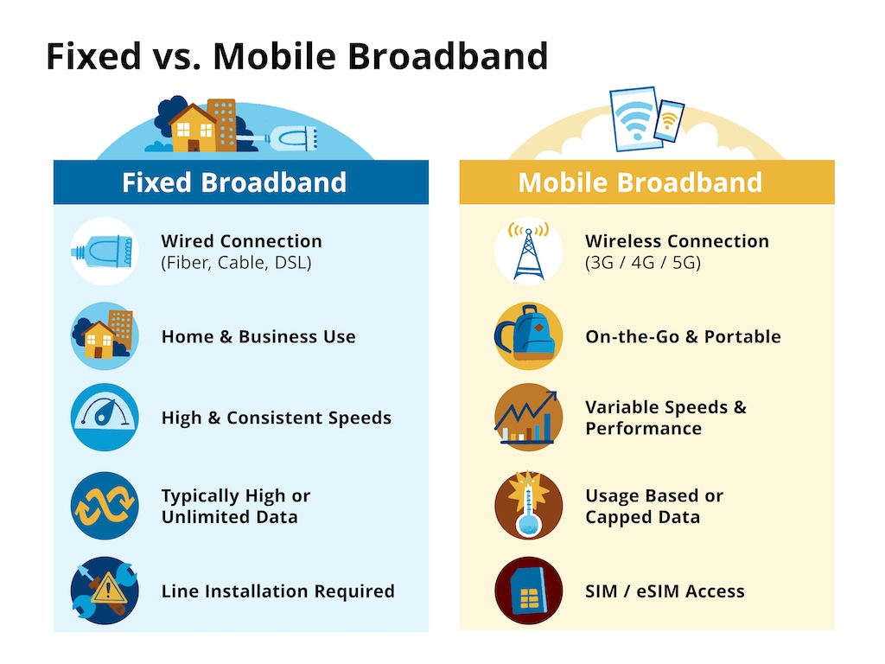
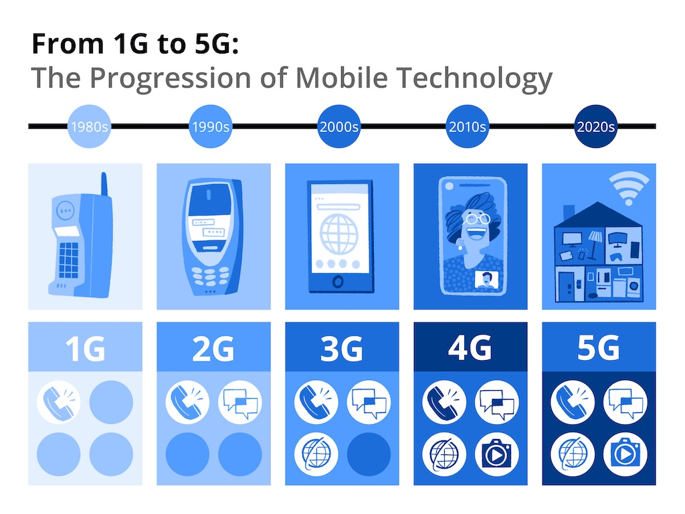

Internet Access
The Unfinished Digital Revolution: Expanding Internet Access
Internet access has grown at remarkable speed, yet digital opportunity remains deeply unequal. While networks now reach much of the world, millions of people, especially in poorer countries, are still shut out of the digital economy. The reasons go beyond infrastructure, and reflect gaps in affordability, skills, and inclusive policy design.
May 2026, Story by Ana Florina Pirlea & Lorena Corso, Visuals by Jan Willem Tulp & Maarten Lambrechts, Illustrations: Drew Bardana
Key facts from this story
92%
of the world’s population had access to electricity in 2023.
581 million
of the 666 million people without access to electricity live in Sub-Saharan Africa.
44%
of rural dwellers in Ethiopia had access to electricity in 2023, up from just 2 percent in 2000.
Mind the gap: the global connection deficit
Internet access lowers the cost of economic and social transactions, making workers more productive and enabling innovation, trade, and job creation. But access alone is not enough. Without supportive policies around competition, skills, and strong institutions, digital adoption may fail to generate broad‑based gains and can even widen inequality.[reference: int1]
How many people are still offline?
Although Internet access has expanded quickly, [emphasis: over a quarter of the world’s population remains unconnected].
2.2 billion
people are still offline (in 2025)
The share of people using the Internet is measured primarily through household surveys, with individuals asked whether they have used the Internet in the previous three months, from any device (computer, phone, TV, and so on) and any location (home, work, school, café).[footnote: If no recent survey exists, statistical modeling is used to estimate values based on correlates such as mobile-subscriptions, gross domestic product per capita, education, and regional patterns.] [reference: intm1]

Who is left behind? Women and rural areas
Rural areas, in both high- and low-income-economies, often lag urban centers when it comes to Internet access, reflecting gaps in infrastructure and income.[emphasis: In rural settings, limited][emphasis: Internet access constrains the use of digital services], such as market information (including prices), agricultural support (weather data for farmers), digital payments, remote health services, and access to government programs.[reference: rur1] This disparity is especially pronounced in rural areas of the poorest countries, where only 14 percent of people use the Internet; even in lower-middle-income economies, where around half the people in rural areas do not have Internet access.
Another critical divide when it comes to Internet access is the [emphasis: gender gap]. Worldwide, 280 million more men than women were using the Internet in 2025.[reference: gnd1] Women and girls are less likely to use the Internet regularly, especially in low-income economies, where around 30 percent of men but less than 20 percent of women are online.[reference: gnd2]
[emphasis: ]
[emphasis: 280 million more men than women were using the Internet ]in 2025.
The high cost of mobile devices, limited literacy and digital skills, and in some cases, low awareness of mobile Internet, are among the persistent challenges limiting Internet use. While both men and women are affected, [emphasis: women usually face more barriers to Internet use due to structural inequalities in income, education, and employment], which make devices less affordable and digital skills harder to acquire. In some settings, restrictive social norms and lack of family approval further limit women’s ability to access and use the Internet. Some Internet activities, including social media, may also carry safety and health risks for youth, especially young women.[reference: gnd4][reference: gnd5][reference: gnd6][reference: gnd3]
Progress in expanding Internet access
Expanding network coverage and Internet usage, especially in poorer countries, are also key targets under the Sustainable Development Goals framework (Targets 9.c, 17.6 and 17.8).
High levels of Internet access are concentrated in rich economies. But despite significant infrastructure costs and affordability and digital literacy barriers, over the past decade, most countries have steadily increased their Internet access. Notably, several lower-middle-income economies have emerged as strong performers.
The chart below shows the change in Internet access levels, by country, between 2015 and 2023. The transparent arrows show where countries would have been, had they followed the typical pace of progress since 2015 (see more details about how this is calculated here).[reference: progress] This allows us to see which countries have progressed faster than expected, considering their access levels in 2015. You can explore further in the section on tracking progress.
Fixed vs. mobile broadband: complementary pathways
Measuring Internet use considers any online activity, even those requiring minimal data, such as emailing or browsing. But data-intensive services—such as remote learning, telemedicine, or integrating artificial intelligence into daily life[reference: ai1]—demand[emphasis: ]high-speed access or [emphasis: broadband]. There are two primary types of broadband connection: fixed and mobile.
Fixed and mobile broadband differ in the way they are delivered and the trade-offs they offer for users. [emphasis: Fixed broadband] typically provides faster, more reliable connections but depends on extensive, costly infrastructure and is therefore concentrated in denser, higher-income areas. [emphasis: Mobile broadband], on the other hand, is delivered wirelessly, making it cheaper to deploy and more flexible, though often with more variable performance.
The illustration below summarizes the key differences between these two technologies.

In practice, the two technologies are complementary: fixed broadband underpins high-capacity national networks and enterprise use, while mobile broadband drives widespread personal connectivity and inclusion.
[emphasis: Fixed broadband connections are common in many high-income economies], [emphasis: but rare in low-income economies]. Extending fixed broadband to rural, remote, or low-income areas is often commercially unviable: infrastructure works, such as laying fiber-optic cables underground, are expensive, while revenues are low due to sparse populations and limited purchasing power. This mismatch between high upfront investment and low returns discourages private operators without public support or cost-sharing.[reference: brdb1] [emphasis: Most][emphasis: people who use the Internet do so using mobile broadband, ]especially in lower-income economies, as it is cheaper and faster to deploy.
Uneven network coverage
Globally, most people use mobile phones and mobile broadband to go online. Mobile broadband provides wireless Internet access via cellular networks (mostly through 4G or 5G) using SIM-based devices (such as cell phones) or fixed-wireless terminals.[emphasis: ]
[emphasis: Mobile networks have advanced rapidly since the 1990s], from basic digital communication to highly sophisticated connectivity. Thirty years ago, second-generation (2G/GSM) networks marked the shift from analog (similar to traditional radio broadcast, with no encryption) to digital (information converted into digital data and encrypted before transmission), improving voice quality and enabling text messaging. Next, third-generation (3G) technology brought mobile Internet into everyday use, making web browsing and video calls widely accessible. Then fourth-generation (4G/LTE) networks delivered broadband-like speeds, supporting high-definition video and today’s data‑intensive apps.[reference: netc1]

[emphasis: ]
[emphasis: The latest generation of mobile networks (5G) is designed to transmit data very quickly.] This enables large numbers of everyday objects, such as sensors and appliances, to be connected and communicate continuously (a concept known as the “Internet of Things”).[reference: iot1] This capability supports better public services and the development of smart cities—for example, allowing traffic lights to adjust to congestion[reference: iot2] The use of 5G enables ambulances to transmit real-time patient data and video to hospitals, improving triage and reducing treatment delays.[reference: 5gneth]
Expanding mobile network coverage in low-income economies is challenging due to high infrastructure costs and weak supporting systems. Although less expensive than introducing fixed broadband, mobile broadband still requires significant investment.
Extending mobile coverage to rural and remote areas is often not commercially viable without government support. Unlike urban areas, where towers, fiber backhaul, power, and rights of way already exist, many rural areas lack this infrastructure and require costly new construction, frequently over difficult terrain. Lower population density and incomes limit revenues, while unreliable power, often relying on diesel or off‑grid solutions, further raises capital and maintenance costs.[reference: infr1][reference: rurinf1][reference: infr3]
Internet access is the first step toward participating in the digital world. Yet once people are online, connection speed determines which activities are possible and how much those connections translate into real opportunities and improved well‑being.
Why Internet speed matters
Internet speed heavily impacts the quality of online experiences. [emphasis: Fast broadband speed supports economic growth, productivity and innovation, and allows access to better education and healthcare services.][reference: spd1][reference: spd2][reference: spd3] In countries like [emphasis: Singapore], [emphasis: Chile], or [emphasis: United Arab Emirates][emphasis: ,] median download speeds for mobile and/or fixed broadband are high, at over 300 megabits per second (Mbps) and supportive of a wide range of activities, while in some low-income economies, median Internet connections are often under 20 Mbps. [emphasis: ]
From coverage to connection: the usage gap
There is often a significant gap between network coverage and Internet use.[emphasis: Even when broadband networks reach most of the population, many people remain offline due to the high cost of devices and data packages,[reference: ai1] as well as low levels of digital literacy.] For example, in [emphasis: Bangladesh], although 4G mobile networks covered 100 percent of the population in 2024, only 53 percent of people were observed to be using the Internet.
3 out of 9 people
covered by a network are not online
This disconnect also shows that infrastructure alone is not enough to achieve true digital inclusion. Understanding the reasons why people remain unconnected, even when network coverage is available, is essential for designing effective and equitable interventions that facilitate meaningful access and use.
Digital literacy: the key to meaningful access
Digital literacy is essential for meaningful Internet use. [emphasis: Many people lack the skills needed to navigate online information, evaluate content, and communicate through mobile devices].[reference: skls1][reference: ai1] In some countries, more than half the population have never sent a text message using a mobile phone.[reference: fndx1][emphasis: ]This gap in technology usage illustrates how limited digital skills can prevent individuals from taking full advantage of available connectivity, and underscores the importance of education and training initiatives.
Device affordability
Globally, nearly all Internet users access it via smartphones.[reference: fndx1] One of the biggest reasons many communities remain offline is simply the cost of smartphones, computers, and other devices. The World Bank’s 2025 Findex report shows that not having enough money to buy a smartphone is the leading barrier to owning one, and without a smartphone, people cannot use the Internet.[footnote: [emphasis: Smartphones] are defined as mobile devices capable of running applications and supporting full web browsing. Smartphone ownership dominates in most economies. [emphasis: Basic phones ]allow calls, texts, and limited services such as mobile money. Basic phones remain more common in only 18 countries (17 of them in Sub-Saharan Africa, plus Bangladesh). South Asian countries like India, Pakistan, and Sri Lanka also still have relatively high shares of basic phone users. A subset of basic phones known as [emphasis: feature phones] may include simple apps like WhatsApp or support text-only web browsing. However, feature phones make up only a very small fraction of devices overall. (source: The Global Findex Database 2025: Connectivity and Financial Inclusion in the Digital Economy)][reference: fndx1] [emphasis: The device cost barrier is even more acute for adults in the poorest 40 percent of the population.] In some countries in Sub-Saharan Africa, the average cost of a smartphone can represent almost 45 percent of an adult’s monthly income[footnote: Average price smartphone, internet access enabled.], and about 40 percent of the monthly income in South Asia.[reference: devaf2] Improving access to affordable devices is not just helpful; it is essential for real digital inclusion.
Internet access opens the door to better jobs, more productive businesses, improved public services, and new ways to learn, connect, and innovate. Being connected makes it easier to acquire new skills, find employment, access education and health services, and participate more fully in social and civic life. These opportunities will continue to expand as digital technologies, including artificial intelligence, become more embedded in everyday life. Yet extending those benefits to everyone is not simply a case of expanding networks. Affordability, digital skills, and inclusive policies remain critical to increasing meaningful Internet use, especially for poorer, rural, and marginalized communities.